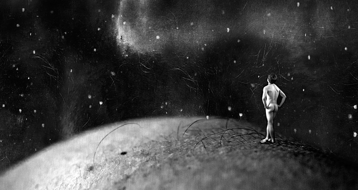

past exhibition |
|||
Human LandscapesHunter Canning |
|||
|
 On view is a selection of Canning’s “human landscapes" - digital collages comprised of many (often a thousand or more) abstracted images of his subject's bodies. Fused together through tireless manipulation they become environments where figures encounter fragments of their own anatomy as the very world which they inhabit -- little travelers in a kind of Boschian otherworld. Though born of the possibilities of modern photo editing technology, these images chime with a rich history of makers, photographic or otherwise. The early cinematic experiments of Georges Méliès come to mind; certain works of Dalí and Man Ray too; the technology may be different, but the surreal impulse is remarkably close. Images of single subjects take an up close and extremely personal approach. Bodies offer us their most unusual features, and Canning frames them with surprising inventiveness, often evoking a double take. They teeter on the brink of erotic and horrific. Canning expresses an unrelenting fascination with "the conversations people are having in their own heads; their fears, preoccupations and stories", but recognizes that, for the most part, these narratives remain "locked within and undisclosed". These images, which all originate from close working sessions with the subjects, are an attempt to probe these unknown territories of the mind; the body -- seen in ways which we have perhaps not known it -- acting as a visceral bridge. Hunter Canning was born in Monte Nido, California. He studied photography at Santa Monica City College before moving to New York in 2005 and attained his BFA in Acting at SUNY Purchase. His surrealist photo-composite "landscapes" were featured in the exhibition PERMUTATIONS at EyeHeart Gallery in Chelsea alongside photographer Brett Lindell in October of 2014. Concurrently The Sheen Center presented a solo exhibition of his "Subway Series", an originally web-based project which has attracted thousands of followers. Canning has extensively photographed for New York theater companies. He is the official photographer for The Flea Theater, and has worked with several other organizations including The Wild Project, Joe's Pub and The Bushwick Starr. His images have been featured in The New York Times, TimeOut New York and Backstage Magazine. For sales inquirers, please contact the artist: |
|||
exhibition archive |
|||
| 2016 | 2015 | 2014 | 2013 |
| 2011 | 2010 | 2009 | 2008 |